A Montessori school where every child, regardless of where they come from, is genuinely seen, deeply nurtured, and given the space and trust to become fully, beautifully themselves.
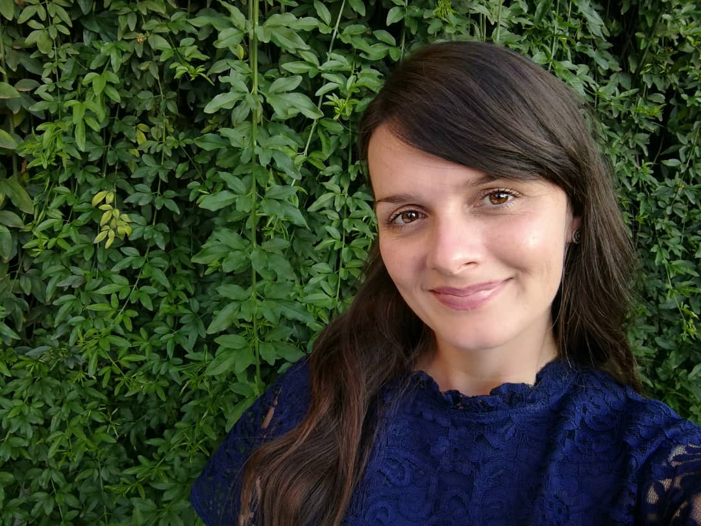
Everything we do flows from a clear sense of who we are, why we exist, and what we believe about children, learning, and our place in the world.
To nurture the whole child — mind, heart, and body — through authentic Montessori education, in a community where every child, from every background, is genuinely seen and deeply valued.
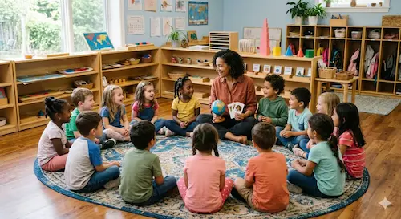
A generation of children who are as emotionally intelligent as they are academically excellent, and who lead their lives with kindness and courage.
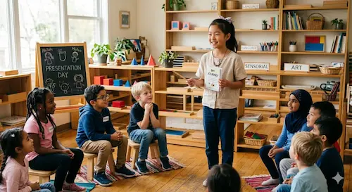
We do not educate children in parts. At Karisimbi, the mind, the heart, and the body are treated as what they are: one living system. A child flourishes only when all three are nourished — in concert, with intention, every single day. This is what it means to offer an education worth giving.
We do not fill minds. We light them, and we make sure the fire lasts. Our three-hour work cycles protect the deep concentration that real academic mastery requires. Montessori materials make mathematics, language, and science tangible before they become abstract, so children do not just memorise, they understand. They progress at their own pace, guided and observed closely by educators who know them well. The result is not a child who has covered the curriculum. It is a child who owns it.
Before a child can learn, they must feel safe. Before they can focus, they must feel loved. They need to know, with absolute certainty, that they belong. Every morning begins not with a lesson, but with a moment of real connection. Our guides are trained not just to teach, but to notice the child who is quieter than usual, the one whose eyes have lost a little of their light. They follow up. They sit down. They stay.
We teach empathy not as a subject but as a way of being. Kindness is not a rule here; it is a culture. A child who feels whole at school will learn anything.
Twice every week, the Montessori work cycle expands onto the field. Not as a break from learning — as a continuation of it. Movement activates the brain. Sport teaches children to lose gracefully, win humbly, and lead under pressure. Physical confidence spills into intellectual confidence. A child who trusts their body learns to trust their mind.
We live Montessori; we do not merely advertise it. Every classroom, material, and interaction is philosophically coherent and true.
Uninterrupted morning work periods that develop the deep concentration research links to lifelong achievement and genuine self-direction.
Families from Rwanda, Africa, and around the world. Children who grow up alongside peers with different stories become more curious, more empathetic, more complete.
French is woven into every programme from Toddler through Upper Elementary — giving children a bilingual foundation that opens doors for life.
Padel, football, basketball, and movement arts — professionally coached and Montessori-aligned.
Older children mentor younger ones. Younger children aspire to what they see ahead. Real leadership and empathy grow here, naturally.
Not a policy on a wall but a practice woven into every hour of every day. Children learn to be kind because the adults around them are.
Monthly workshops, open classroom observations, and genuine dialogue. When parents understand the why, they become extraordinary partners.
Karisimbi Montessori School is proud to operate as a Montessori Sports-Supported School — a formal designation reflecting our commitment to integrating structured, philosophy-aligned physical education directly into the Montessori day. Sport here is not an extracurricular. It is a core pillar of our curriculum, designed with the same intentionality and care as any prepared classroom environment.
"In a pioneer partnership with Mamba Sports Club, our children will have professional training in padel, football, and basketball. The facility is the school's living classroom because at Karisimbi, sport is not separate from education, it is an essential part of it."
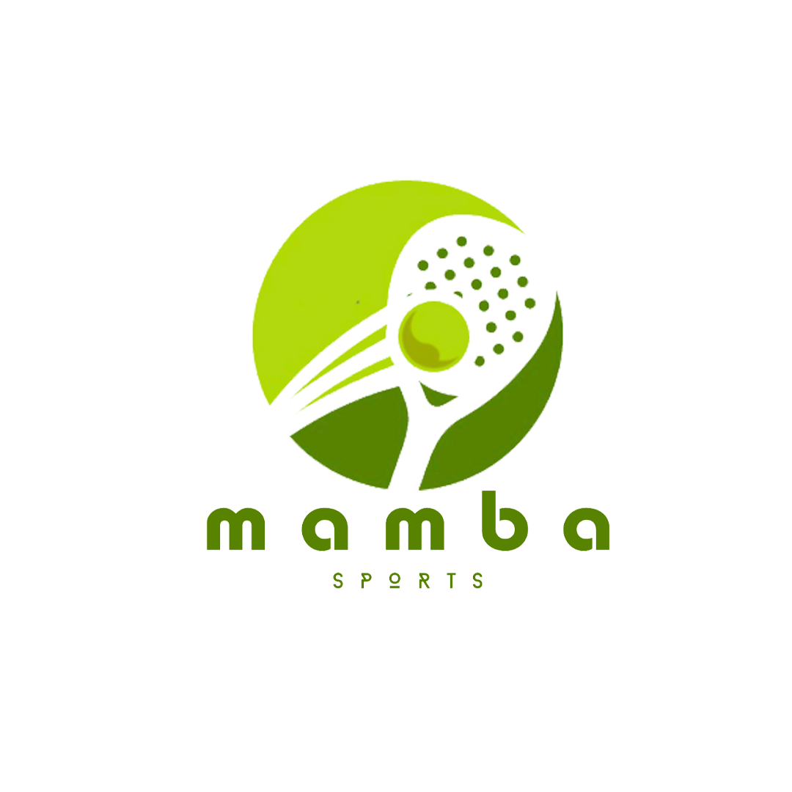
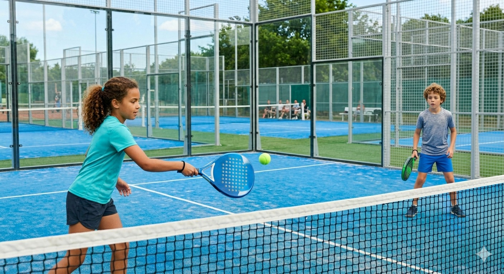
A fast-growing racket sport combining skill, strategy, and teamwork. Develops hand-eye coordination, spatial awareness, and the kind of focused attention that carries beautifully back into the classroom.
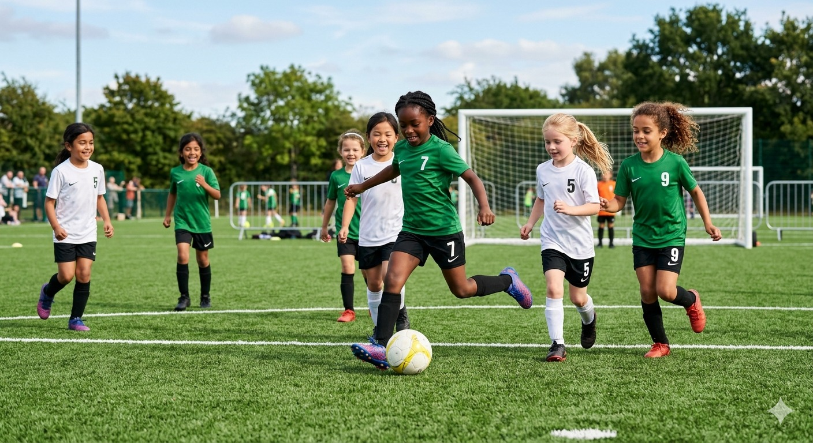
The world's game — and one of the finest teachers of collaboration, communication, and resilience. Children learn to read the field, support their teammates, and find their role within a larger purpose.
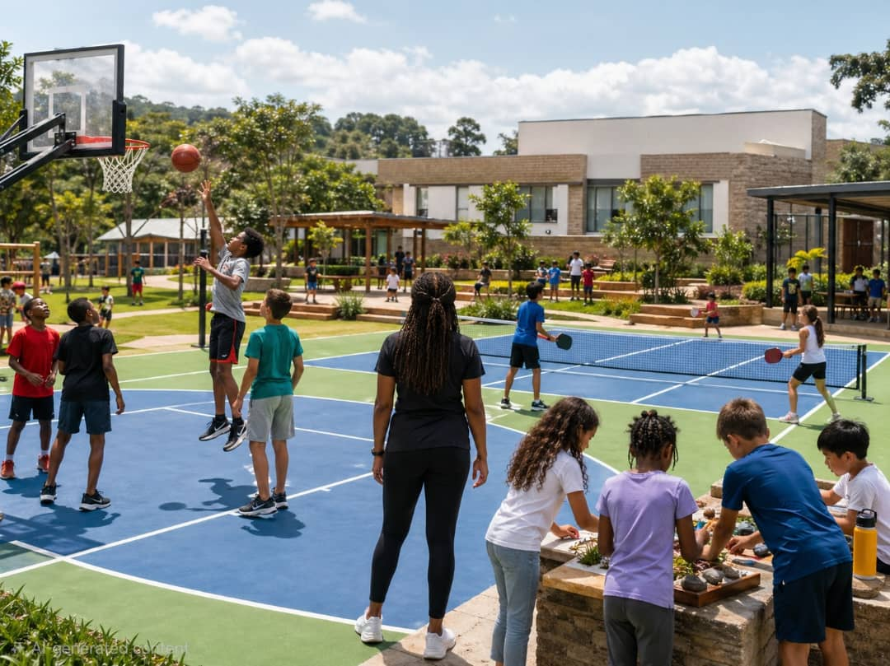
Coordination, agility, quick thinking, and teamwork under pressure. Basketball develops both physical confidence and the social intelligence to lead, follow, and adapt in real time.
Rooted in Montessori principles, our PE & Health programme develops body awareness, coordination, and healthy habits through purposeful movement, mindful breathing, and a joyful relationship with physical wellbeing, nurturing the whole child from the inside out.
Sports coaches and classroom guides use the same observational vocabulary. A child's growth is one continuous story, understood and held by the whole team.
Weekly cross-team planning ensures physical activities complement classroom themes. Body and mind work on the same canvas, in the same week.
Parent progress conversations include input from both classroom guides and sports coaches — giving families a genuinely complete picture of their child's development.
Montessori recognises distinct planes of development, each with its own characteristics and sensitive periods. Our four programmes honour these planes with purpose, beauty, and deep developmental respect.
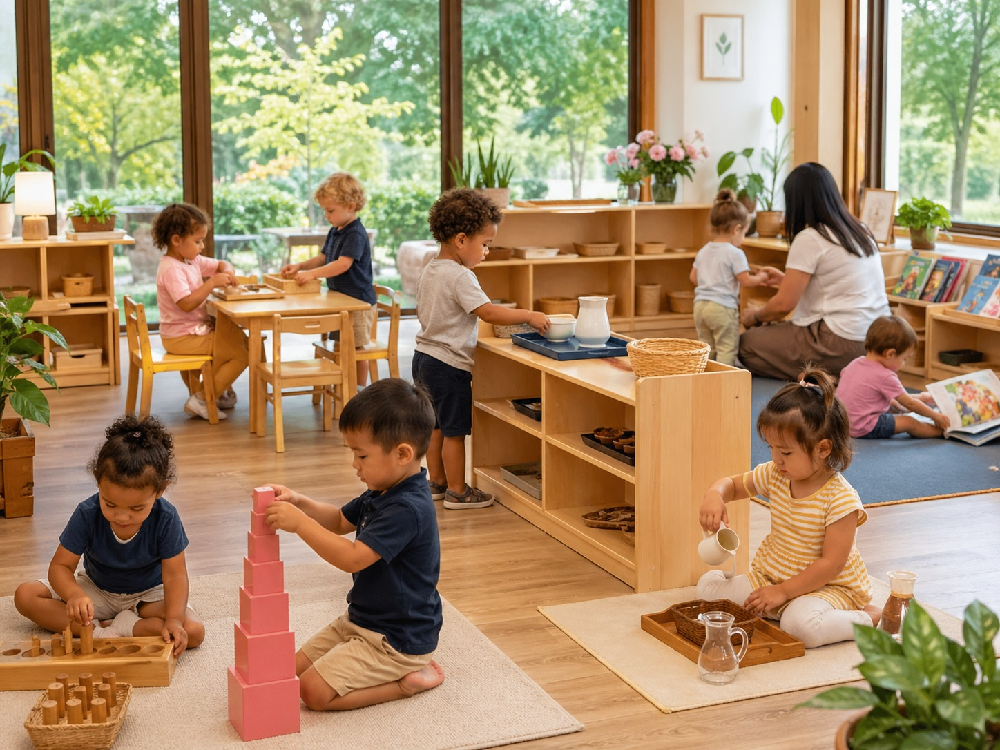
The Builder of Self Begins Here
The toddler is not a small child waiting to become a preschooler. They are a person in a period of extraordinary, explosive self-construction — building language, will, coordination, and identity at a pace that will never again be equalled. Our Toddler Community honours this urgency with an environment that is beautiful, ordered, child-sized, and deeply kind.
Everything here has been chosen to invite independence. Children prepare their own snacks, care for plants, fold their own clothing, and choose their own work — not as performance, but as genuine participation in the life of the community. These seemingly simple acts are the foundation of confidence, concentration, and character that will carry a child through every year of school and every decade of life that follows.
French enters gently here — through songs, greetings, simple vocabulary, and the warm repetition of everyday words. A two-year-old absorbs language with a naturalness that older learners can only admire. We meet that gift with intention.
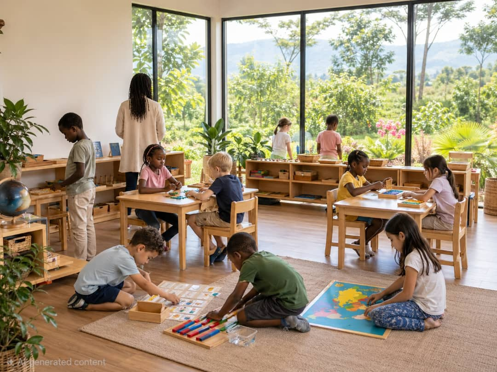
The Children's House — Where Magic Is Made Visible
The Casa is where the Montessori magic becomes visible. In a three-year mixed-age community, children between three and six encounter the full range of Montessori materials — Practical Life, Sensorial, Language, Mathematics, and Cultural Studies — not as subjects to be taught, but as invitations to explore with complete freedom within a prepared and beautiful space.
The three-hour morning work cycle begins here. Children choose their work, carry it to their space, and return it to the shelf when they are finished. This daily act of self-direction is more than a learning choice — it is the cultivation of agency, responsibility, and the kind of focused attention that most adults spend years trying to recapture.
French deepens here: through conversation corners, picture books, role play, and French-speaking story sessions woven into the weekly rhythm. By the time children leave the Casa, French is already becoming a natural part of how they think and speak.
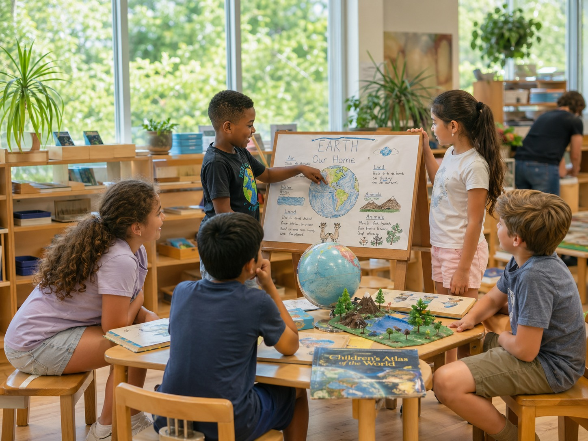
The Age of Why — and the Beginning of Everything
Around age six, something profound shifts. The absorbent mind of early childhood gives way to a reasoning mind — hungry, searching, and deeply social. The Lower Elementary child does not want facts. They want to understand the universe. They want to know why things are the way they are, how they came to be, and where they fit in the story of life on Earth.
Through Montessori's five great lessons — the Story of the Universe, the Story of Life, the Story of Humans, the Story of Language, and the Story of Numbers — children ages six to nine are invited into the largest possible picture of existence, then given freedom to follow their fascination wherever it leads. Research, collaboration, and deep inquiry become daily practice.
French expands significantly here: reading, writing, grammar, and extended conversation. Children work in French across subject areas, building genuine academic fluency alongside their English learning.
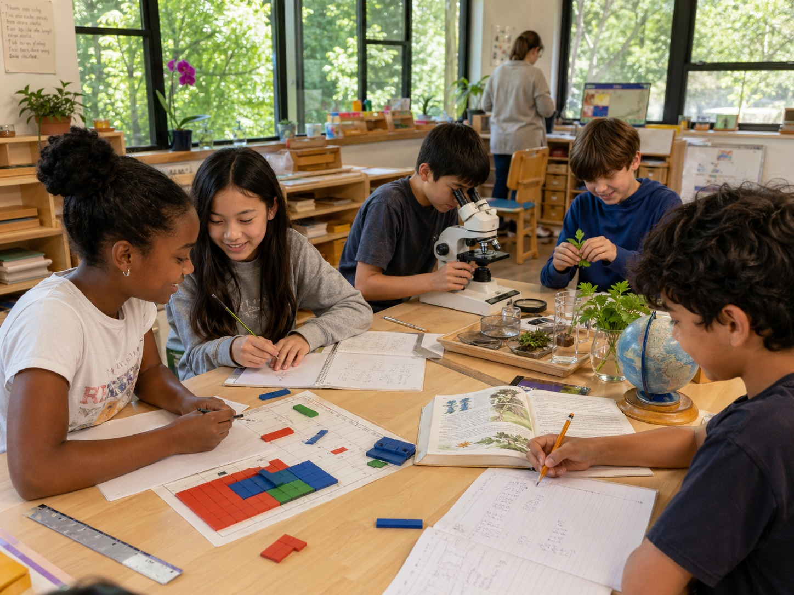
The Emerging Citizen — Ready to Shape the World
Children ages nine to twelve are developing abstract reasoning, a passionate sense of justice, and an urgent desire to understand themselves in relation to others, to society, and to history. At Karisimbi, this is where the depth of Montessori investment truly pays forward.
Advanced mathematics, complex written composition, Socratic seminars, community service, entrepreneurial projects, and digital literacy are woven into a curriculum that takes each child's own questions as its starting point. Children who have spent years learning to direct their own work now engage in scholarship that looks nothing like schoolwork — and everything like real intellectual life.
French reaches full academic fluency here: literature, debate, project presentations, and cross-cultural research conducted in both French and English. By graduation, Karisimbi children are genuinely bilingual — a foundation that opens doors in universities and careers across the world.
The truest measure of a school is not its facilities or its philosophy documents — it is how families feel when they become part of the community.
“Sneza ran a small school during the pandemic, and our then-4-year-old Luke was lucky enough to participate. The thing I loved about the school is that every single day was filled with wonder, social and emotional learning, and above all, a deep love of learning. These are habits that he has carried forward as he has grown older. He also advanced significantly in his reading and writing - and it was all driven from a place of interest and meaning. If Sneza ran a school in my city, I would join again in a heartbeat!”.
Ms Sneza is an amazing educator who combines wisdom about the needs of children with a deep kindness. Our son was initially very shy and withdrawn in class, and by the end of her time with him she had brought out his self-confidence and humor. She was always willing to discuss his education and schooling with us and went above and beyond to make sure that he would thrive. I highly, HIGHLY recommend her as an educator and leader.
We met Sneza during COVID when we joined her homeschool pod. While most children were falling behind during lockdowns, our daughter flew through milestones and re-entered school reading confidently. Having known Sneza as both teacher and administrator, we've seen firsthand how deeply she understands children as learners.
Testimonials will be added as families join our community ahead of our 2026 opening.
A Montessori school is only as good as the people within it. Our guides are not simply credentialed teachers — they are trained observers, patient companions, and deeply committed students of childhood. Each one is selected not only for their qualifications, but for their capacity to listen, to wonder, to be kind, and to believe fully in the children before them.
We are carefully selecting the educators who will bring Karisimbi to life. Every guide will hold Montessori credentials, receive continuous professional development, and be chosen above all for the warmth, patience, and genuine belief in children that no certificate alone can confer. Full profiles will be published ahead of our 2026 opening.
We are assembling a founding team of educators who believe, as we do, that the most important work a person can do is help a child become fully themselves. If you hold Montessori credentials and are looking for a school where your values and your practice are finally in the same room — we would love to hear from you.
We are looking for a warm, patient, and deeply observant guide to lead our Toddler Community. The ideal candidate understands the profound developmental significance of the toddler years and brings both Montessori training and a genuine love of working with the very youngest learners.
Our Casa guide will create and steward a prepared environment of extraordinary beauty and intentionality for children ages three to six. We seek someone who understands the sensitive periods of early childhood and who can hold a three-hour work cycle with calm authority and genuine delight.
The Lower Elementary guide will bring Cosmic Education alive for children ages six to nine — connecting mathematics, language, science, history, and geography into one grand, cohesive story. We are looking for someone with both the intellectual breadth and the relational depth this age group demands.
Our Upper Elementary guide will work with the school's most senior students — children on the threshold of adolescence who are developing abstract reasoning, a sense of justice, and a hunger for real intellectual engagement. This role demands equal parts scholar, mentor, and community builder.
Our classroom assistants are an essential part of the Karisimbi community. Working alongside our guides in the Toddler, Casa, and Elementary environments, you will support individual children, help maintain the prepared environment, assist with materials, and contribute to the warm, orderly atmosphere that makes deep learning possible. This is an ideal role for those pursuing Montessori training or those with early childhood education backgrounds who wish to grow within an authentic Montessori setting.
This is a whole-school role spanning our Preschool through Upper Elementary communities. You will work closely with classroom guides to ensure that French is integrated meaningfully into the rhythms of each programme, from song and story in the early years, through conversation and grammar in the elementary years, to genuine academic fluency by graduation. You are not just teaching a language. You are giving children a second home in the world.
To be part of a founding team is rare. It means shaping culture, not inheriting it. It means building the traditions, the rhythms, and the community that every future class will inherit. We are looking for educators who understand the weight and the privilege of that responsibility — and who are ready to pour themselves into it with joy, with kindness, and with absolute dedication to the children in their care.
To apply, send your resume and cover letter to sneza@karisimbischool.com.
Joining Karisimbi Montessori is a joyful, personal process. We take time to understand your child and your family — because a lasting partnership begins with genuine connection, not paperwork.
Submit an enquiry or call us. We will reach out within 48 hours for an initial conversation — to answer your questions and begin understanding your child and your family's values.
Visit our campus, experience our prepared environments, and meet your child's prospective guide. This is your space to ask everything. There are no wrong questions here.
Your child spends a morning in the classroom while you wait in our parent lounge. Our educators observe and interact gently — learning what no form can tell them about how your child comes alive in a Montessori environment.
Where a good fit is confirmed, we extend a formal offer. Enrolment is completed simply and clearly. We guide you through every next step with warmth — this is supposed to feel exciting.
Before the first day, new families attend our Orientation covering Montessori philosophy, school rhythms, and time to connect with other incoming families. Your child's first day is celebrated, not rushed.
Welcome to the Karisimbi community. From this day forward you are not a parent on the outside of your child's education — you are an essential part of it, always.